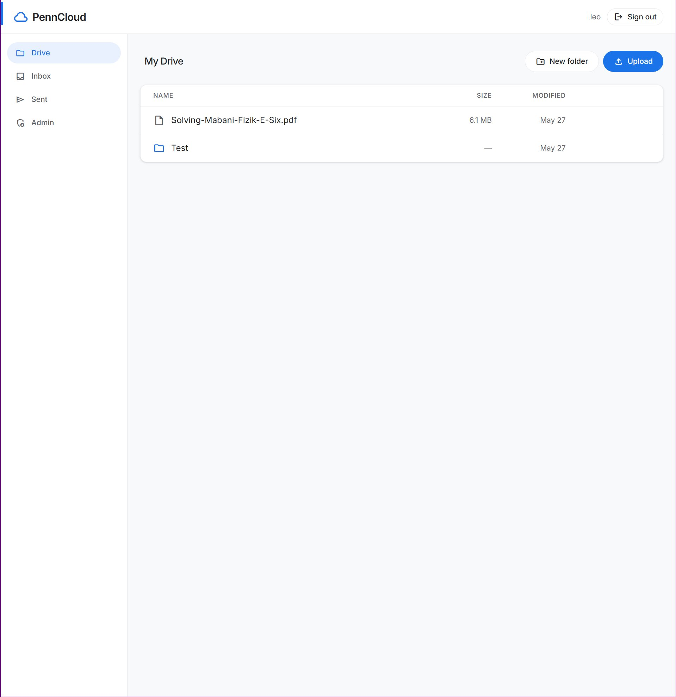
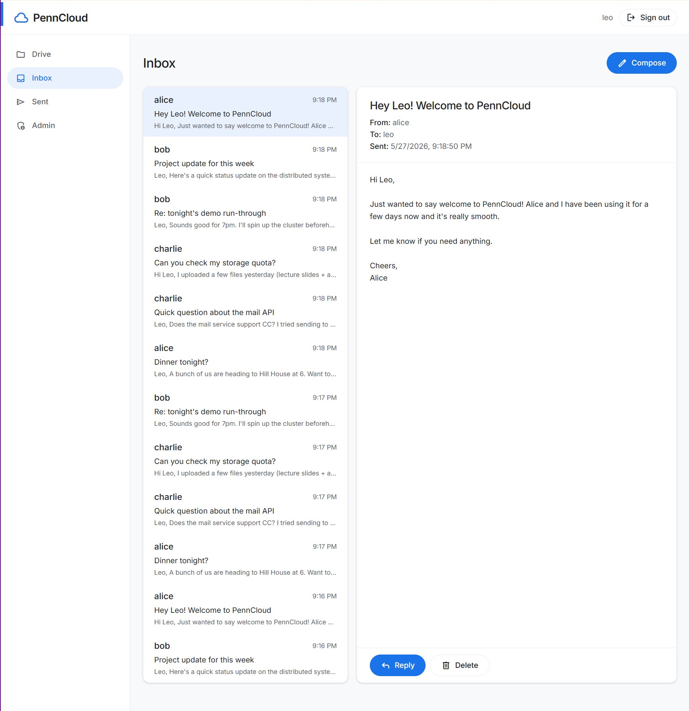
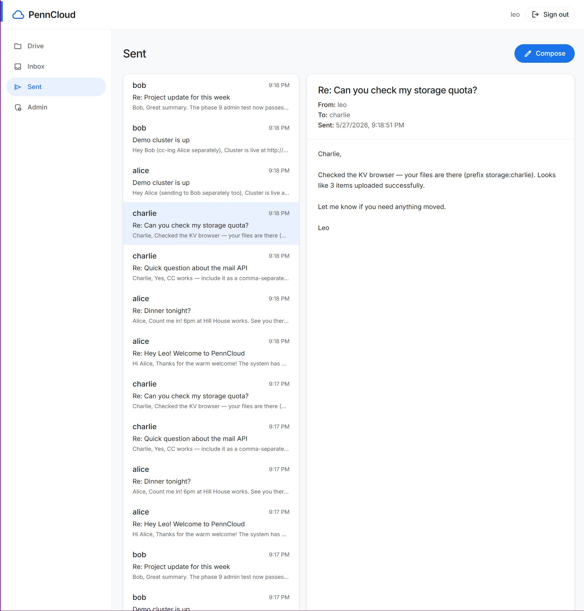
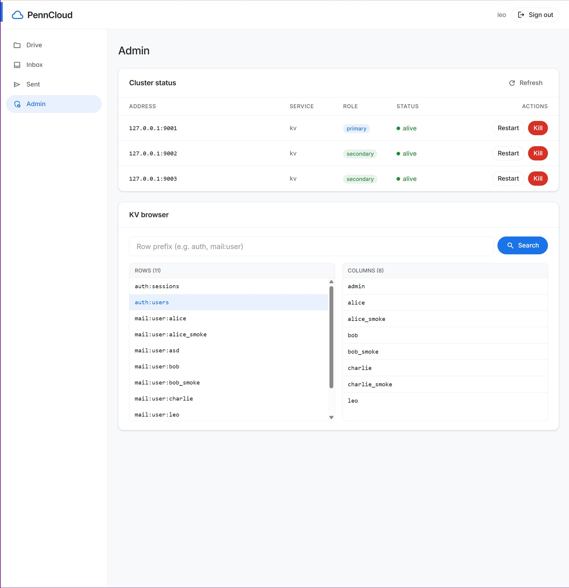
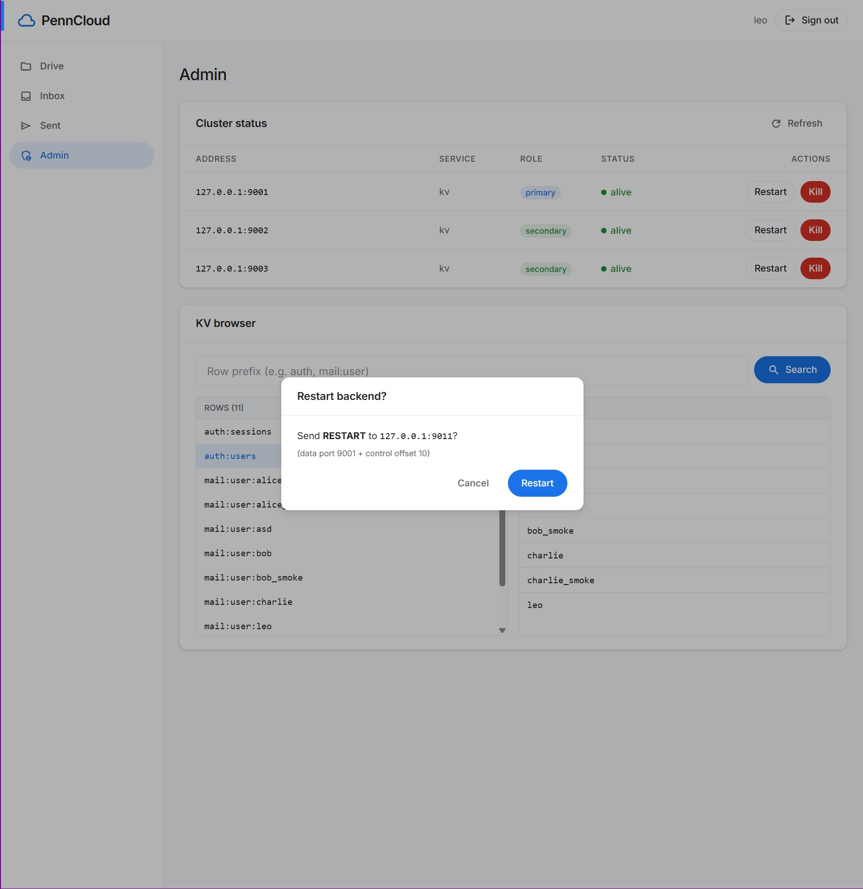

Penn CIS 5050 · Distributed Systems
PennCloud
A distributed cloud platform built from scratch in C++17 — Google Drive-style file storage, Gmail-style webmail, and a live admin console, all backed by a replicated key-value store. Four cooperating services implement primary-backup replication with W=2 quorum writes, WAL-backed durability, automatic failover, and a React/TypeScript UI.
// 01 · architecture
4 Services, 1 KV Backbone
All persistent state lives in the KV backend — frontends are fully stateless, which means any frontend can validate any session, serve any file, or deliver any email. The coordinator never proxies data; it only answers "where is the primary right now?" The dispatcher is off the hot path after the initial redirect, so it can't become a bottleneck.
↓ HTTP + cookies
Dispatcher
:8080 — HTTP 302
→
↓ Router → Controller → Service → KvClient
Coordinator
:9000 — lookup only
→
Backend ×3
:9001 primary · :9002–9003 secondaries
↓ fsync WAL + periodic checkpoint
Disk
WAL · checkpoint · data
Frontends are stateless — KV-backed sessions mean any frontend validates any session.
Control port accepts KILL / RESTART, enabling live fault injection from the admin console.
Service registry and liveness tracker. Backends register on startup; the coordinator monitors heartbeats and answers "who is the primary for service X?" at lookup time. Stateless with respect to KV data — it only tracks topology. Frontend KvClients hit the coordinator once to resolve the primary, then connect directly.
liveness window 15sservice groupsprimary lookup
Primary-backup KV store. Writes on the primary fan out to 2 secondaries via PeerLink async queues; the primary waits for W=2 ACKs before responding to the client. WAL appended with fsync on every write; periodic checkpoints truncate the log. Secondaries replay the WAL on restart and catch up automatically. Each write is version-stamped for monotonic ordering.
W=2/N=3 quorumWAL + fsynccheckpoint 30sWAL replay recoveryversion stamps
HTTP load balancer. Frontends register via a heartbeat port; the dispatcher tracks liveness and issues HTTP 302 Found redirects to an alive frontend. Off the data path after the initial redirect — no request proxying, no throughput bottleneck. Temporary redirect (not cacheable) ensures the client always gets a live target.
HTTP 302heartbeat monitoringnot cacheable
Stateless HTTP server written from scratch — custom HTTP/1.1 parser, multipart upload handler, cookie management, thread-per-connection concurrency. Routes dispatch to AuthController, StorageController, MailController, or AdminController. Pooled KvClient connections to the backend. Serves the React SPA bundle from ui/dist/.
custom HTTP parsermultipart uploadsession cookiesKvClient pool
// 02 · distributed kv store
Wire Protocol, Replication & Durability
Every inter-service message — KV commands, replication traffic, coordinator heartbeats — uses the same binary-safe, ASCII-decimal length-prefixed wire protocol. The length prefix survives binary payloads, commas, CRLFs, and null bytes in values, which matters because file chunks are stored raw in the KV store.
Wire protocolASCII-decimal length-prefix
CommandsGET · PUT · CPUT · DELETE · LIST_ROWS · LIST_COLS
Replication modelPrimary-backup, W=2 of N=3
ConsistencySequential (primary serializes)
WAL formatBE64 version + encoded command + CRLF
Checkpoint interval30 seconds
Fault toleranceSurvives 1 replica loss
RecoveryWAL replay from last checkpoint
quorum write path
On a client write, the primary: (1) appends to the WAL with fsync, (2) fans the command out to both secondaries via async PeerLink queues, (3) waits for W=2 ACKs (including its own), then (4) applies to the in-memory store and responds. A secondary that crashes and restarts replays its WAL from the last checkpoint and catches up automatically — no manual intervention, no data loss within the persisted window.
KV schema — 3 service namespaces
auth:
row: auth:users
col: <username>
val: JSON {username, salt, passwordHash, timestamps}
row: auth:sessions
col: <sessionId>
val: JSON {sessionId, username, createdAt, expiresAt}
salted SHA-256 · 30 min TTL · any frontend validates any session
storage:
row: storage:user:<username>
col: root → <rootNodeId>
col: node:<nodeId> → StorageNodeRecord
col: children:<folderId> → {name: nodeId}
col: content:<fileId>:chunkCount
col: content:<fileId>:chunk:N → raw bytes
UUIDv4 node IDs · 1 MB chunks · move() cycle-detection
mail:
row: mail:user:<username>
col: inbox:list → [messageId, ...]
col: sent:list → [messageId, ...]
col: msg:<messageId> → EmailRecord JSON
EmailRecord: {from, to, subject, body, timestamp, messageId}
atomic inbox/sent append · UUIDv4 message IDs
// 03 · application
Drive · Mail · Admin Console
file storage & webmail

My DriveFolder tree, file upload, UUIDv4-backed rename/move

InboxPer-user message list, inline reading pane

SentSent mail with full-message preview
admin console — live cluster control

Cluster Status + KV Browser
Live primary/secondary status, Kill/Restart per node, row prefix search (auth:users shown with 8 columns)

Restart Backend Confirmation
Sends RESTART to control port :9011 → process exits 75 → supervisor loop restarts it → WAL replay catches up
fault tolerance demo
Kill a secondary from the admin console — writes continue because W=2 quorum is still satisfied with the primary + one remaining secondary. Click Restart; the secondary comes back, replays its WAL from the last checkpoint, and catches up to the current primary version. All this is verifiable live through the KV browser without restarting any user-facing service.
// 04 · build
12 Phases, All Done
Each phase has an explicit exit criterion — a plain C++ test binary under tests/ that exits 0 on success. No external test framework. The smoke test script resets data, starts the full cluster in daemon mode, runs all 10 phase test binaries, then exercises a live cluster end-to-end via curl including a kill-quorum-recover cycle. Full run: 2–4 minutes.
phase 0Skeleton & foundations✓
phase 1Wire protocol✓
phase 2Single-node KV backend✓
phase 3Replication (W=2/N=3)✓
phase 4Coordinator & dispatcher✓
phase 5HTTP stack✓
phase 6Auth & session✓
phase 7Storage service✓
phase 8Mail service✓
phase 9Admin console✓
phase 10React UI✓
phase 11Smoke test & runbook✓
design principles
Dependency injection by constructor throughout — no singletons, no globals. RAII for all resources (file descriptors, sockets, mutexes). Interfaces only where components are genuinely swappable (IKvStorage, ICommandHandler). Thread-per-connection concurrency with std::thread. Stable UUIDv4 node IDs mean rename and move operations never move content bytes — only metadata updates.
// 05 · tools & methods
Tech Stack
C++17
GNU Make
React + Vite
TypeScript
Tailwind CSS
Primary-Backup Replication
Write-Ahead Log
Quorum Writes (W=2/N=3)
SHA-256 (libssl)
Custom HTTP/1.1 Parser
Multipart Upload
Binary-Safe Wire Protocol
RAII
Dependency Injection
UUIDv4
fsync Durability